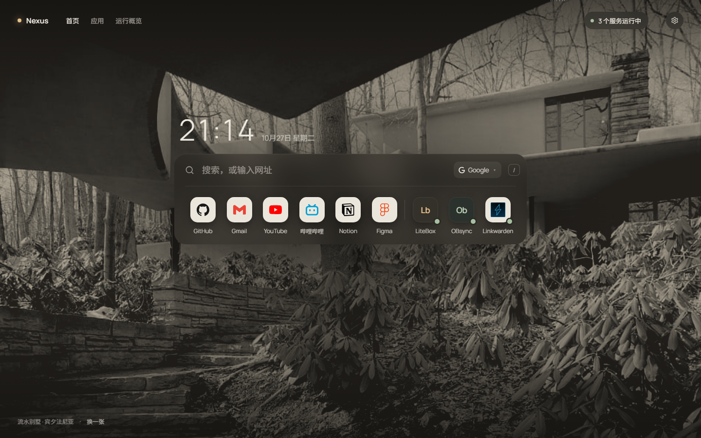
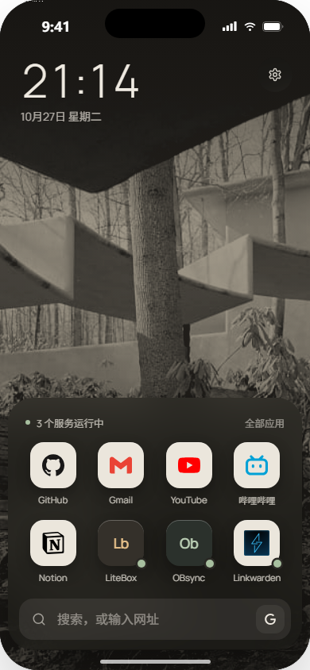
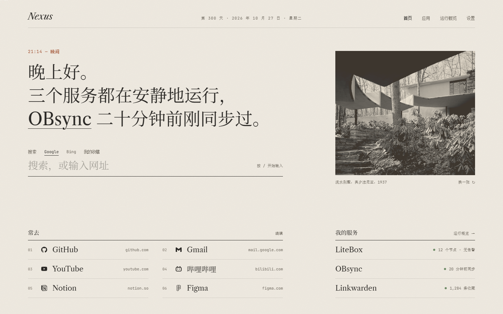
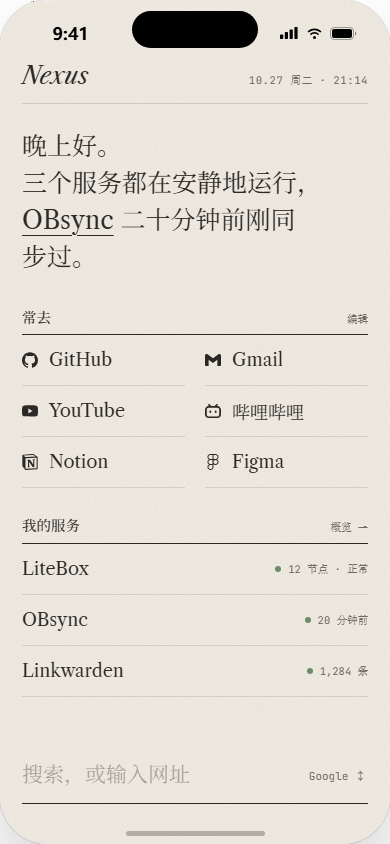

两个首页方向：数字桌面与编辑式个人空间
本轮只做首页。每个方向一张桌面 1440 × 900、一张手机 390 × 844，均为可交互原型（搜索可输入、结果可筛选、按 / 聚焦）。两套方案都没有使用 Modernist 设计系统，旧的三套方案保留未动。
01
现有设计的问题
根本原因在于 Modernist 的规则：零圆角、2px 硬分隔线、Archivo 800、单一红色、等宽网格、一律左对齐。这套规则适合海报和编辑网格，放到每天要打开很多次、需要氛围感的首页上，读起来就是控制台。三套方案共用这些规则，只换了排版密度，所以看起来像同一个系统的三张皮。
排版
- A1 的视觉重心是 104px Archivo 800 的「Good Evening.」，再配一句英文副标题，信息量为零，这是最典型的 AI 首页组合。
- 「常用入口」「我的服务」用 12px 大写加 0.12em 字距，C 和 B 的每个区块标题也是同一种处理，这是仪表盘的语气。
- 中文回退到 Noto Sans SC，和 Archivo 800 的字重、字宽都不匹配，中英混排时英文显得很重。
色彩
- A 的极光由 #ec3013、#7c1405、#ff9783 三团光斑叠在 #201e1d 上，整屏偏暗红，读起来像告警。
- 搜索框聚焦时出现 56px 红色外发光，每张卡片悬停时描边也变红。红色用在所有地方，就失去了「重要」这层含义。
- B 的状态条使用红、琥珀、绿三色，在首页上把注意力引向运维信息。
组件
- 常用入口是 116 × 116 的方块，1px 描边，图标全部是 Lucide 线性图标，GitHub 和 Gmail 只靠文字区分，缺少品牌辨识度。
- 服务卡片同为 116px 高，每张都有名称、状态点、状态文字、描述和 CTA，相当于把监控卡片放进了首页。
- 顶栏有背景切换、主题、设置三组带边框的按钮，视觉权重和导航相同。
布局与层级
- A1 的入口和服务用 margin-top:auto 推到底边，标题和底部之间约 200px 没有内容，搜索框悬在中间。
- 搜索、入口、服务用同一种半透明面板和 1px 描边，三者没有主次。快捷入口和服务卡并排，权重相等。
- 手机端基本是桌面端按比例缩小后纵向堆叠，搜索在顶部，单手够不到。
02
两个视觉方向
R1
Atmospheric Desktop · 氛围感数字桌面
高级、宁静、沉浸、自然

#1B1A17
#A69E8E
#EFEAE1
#E6C08A
#A7BF9F
21:14
Manrope 300 / 500 · 中文 Noto Sans SC 300 / 400
字体
Manrope 的几何感克制、数字宽度稳定，用 300 字重写时间，读起来轻。全页只用两种字重，不用大写字距标签。色彩
壁纸统一做双色调处理：暗部 #221F1B，亮部 #A69E8E，任何照片都会落进同一套低饱和石色。唯一的暖色是灯光琥珀 #E6C08A，只用于光标、聚焦和品牌点。材质
只有一块玻璃：搜索和应用合在同一块暖墨玻璃面板里，不设描边，靠模糊和阴影分出层次。应用图标是 52px 圆角方形，使用真实品牌图形。空间
照片占据画面上方和下方约 60%，界面只集中在视线高度的一条带上。状态缩成右上角一枚胶囊，点开才看到详情。参考与借鉴点
macOS 桌面与 Dock：把应用收进一个物体里，图标即品牌。不借鉴放大动效和反光底座。
Raycast：一个输入框加一列结果，键盘优先，结果出现时替换原有内容，不弹新层。
Mue / Tabliss：照片优先，左下角标注照片出处。不借鉴满屏小组件。
Apple TV 航拍屏保：低饱和、慢节奏的画面可以长时间观看。
桌面构图
R2
Editorial Workspace · 编辑式个人空间
克制、温暖、优雅、细腻
晚上好。
三个服务都在安静地运行。
Libre Caslon Text · 中文 Noto Serif SC · 元信息 JetBrains Mono
#F2EDE4
#2B2926
#6F695F
#B4532A
#6E8B67
常去编辑
01GitHubgithub.com
字体
三种角色：Caslon 与思源宋体负责正文和名称，带书卷气；JetBrains Mono 只写时间、域名、计数这类元信息。最大字号留给一句话，不留给问候语。色彩
纸色 #F2EDE4，石墨墨色 #2B2926。陶土色 #B4532A 只出现在时间、聚焦线和需要处理的状态上。照片印成暖墨双色调。材质
纸张颗粒噪点（约 9% 不透明度），没有卡片，没有阴影。结构靠一条墨线标题加一组浅色细线行来组织，参照目录页。空间
12 栏网格，按 7 : 5 非对称分栏。上半部分是导语、搜索和一张照片，下半部分是常去目录和服务目录，两部分之间保留一段完整的留白。参考与借鉴点
Kinfolk / Cereal 杂志：暖白纸面、大号衬线、很宽的页边距，一张图就能定下整页气质。
Monocle 刊头：刊名、期号、日期排成一行，像报头。这里用「第 300 天」替代期号。
Are.na：目录式列表，信息安静，不用卡片也能看清结构。
Stripe Press：书籍排版的节奏，等宽字体只承担元信息。不借鉴它的 3D 书封。
桌面构图
两者的差异 R1 深色、照片、居中、单一玻璃物体、图标为主；R2 浅色、纸张、非对称分栏、无卡片、文字为主。两套方案的字体、材质、构图和状态表达方式各不相同。
状态的写法 R1 把状态收进一枚胶囊，加上图标角落的小圆点。R2 把状态写进导语，一切正常时就是一句问候，出问题时这句话会变成提醒（可在 Tweaks 里切换到「issue」查看）。
03
高保真首页
以下为静态截图，交互请打开原型文件。截图工具不能完整渲染背景模糊，R1 玻璃面板的实际效果以原型为准。
R1 Atmospheric · 桌面 1440 × 900打开原型 →


R2 Editorial · 桌面 1440 × 900打开原型 →


04
设计自检
R1 Atmospheric
R2 Editorial
第一眼吸引力
强。但吸引力大部分来自照片，换一张杂乱的照片效果会明显下降。需要一组精选壁纸，并按照片亮度自动调整遮罩强度。
中等偏安静。靠排版取胜，第一眼不如 R1 有冲击力，有人会觉得太素。
模板感
「照片 + 时间 + 居中搜索」本身是 Momentum / Bonjourr 的常见套路。把搜索和应用合成一块面板、统一双色调处理，缓解了一部分，但这个结构仍然是熟悉的结构。
较低。不过「衬线 + 等宽元信息 + 纸色」也是近两年独立站点的流行做法，需要靠导语这类内容层面的设计拉开差距。
空白、边框与卡片
全页只有一块面板，没有描边。大面积留给照片，这是有意的。应用栏的竖向分隔线是唯一一条线。
没有卡片。细线较多（每行一条），已经降到 13% 不透明度。搜索和目录之间约 140px 留白，在 1366 × 768 下会被压缩，需要补充矮屏规则。
搜索与入口的易用性
好。按 / 聚焦，输入后结果直接替换应用栏，网站、服务、网页搜索、收藏混合排列。一行 9 个是上限，再多需要第二行或进入应用页。
搜索只有一条下划线，可识别性不如输入框。29px 的占位文字和聚焦时变成陶土色的线做了弥补，可能还需要一个搜索图标。目录行高 54px，点击区域足够。
手机单手操作
搜索在底部，8 个图标在拇指区内，键盘弹出后面板跟着上移。设置按钮在右上角够不到，但它是低频操作。
搜索在底部，引擎切换在右侧拇指位。「常去」列表位于屏幕中上部，单手需要稍微伸展，可以考虑把常去和服务的位置对调。
元素是否都有用途
照片出处说明是唯一的装饰性元素，同时也是「换一张」的入口。
照片纯属装饰，是有意保留的例外，可在 Tweaks 中关闭。「第 300 天」也偏装饰，可以删去。
去掉 Logo 是否仍有特征
部分有。石色双色调和琥珀色光点有辨识度，但很大一部分特征来自照片本身。
有。导语式状态、编号目录和纸张质感都不依赖 Logo。
是否愿意长期使用
深色低饱和，适合整天开着。同一张照片看久了会腻，需要轮换机制。
白天舒服，夜间纸色偏亮，需要一个深色「墨」版本（本轮未做）。
已在本轮修正
R2 导语原来自动换行，会把「运行」拆到两行，已改为按语义手动断行，桌面和手机都已调整。R1 引擎下拉箭头引用了不存在的图标，已替换。
仍待确认
LiteBox 和 OBsync 用的是字母组合占位，需要真实 Logo。品牌图标来自 Simple Icons 和 dashboard-icons 的 CDN，离线时不会显示。手机框架状态栏显示 9:41，与页面里的 21:14 不一致，这是框架的限制。壁纸沿用 assets/wallpaper.jpg。